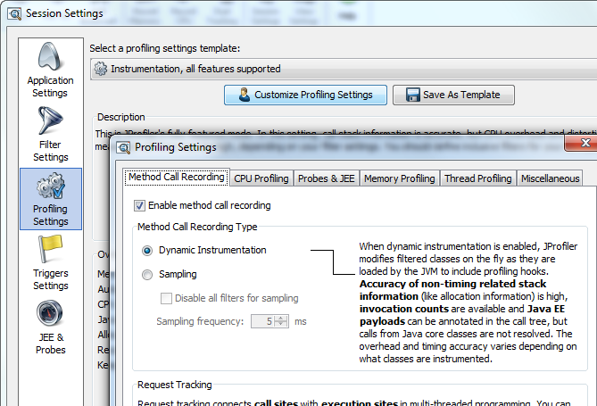

Method Call Recording - Influence on Performance and Accuracy |
Selecting the right method call recording type is crucial for a successful profiling run. As explained in the article on session settings, the aim is to get the best runtime performance while retaining an acceptable level of informational detail. While the most important profiling setting in this regard is the filter configuration, the method call recording type complements this choice. Each method call recording type has various limitations that you should bear in mind when configuring filters settings.

For instrumentation, JProfiler injects bytecode into the methods of profiled classes that report the entry and exit of a method as well as the invocation of methods in unprofiled classes. Unprofiled classes are not touched and run without overhead.
If most classes are unprofiled, this mode causes low overhead while providing highly detailed measurements.
Typically, the entire JRE and any framework classes are unprofiled so that dynamic instrumentation is most
often the best choice. Since there are some classes in the java.* and sun.* packages
that the profiling agent does not get a chance to modify, the internal calls of these packages cannot
be resolved with dynamic instrumentation. However, for most applications this is not a problem.
"Sampling" means to periodically take measurements that are called "samples". In the case of profiling, an additional thread periodically halts the entire JVM and inspects the call stack of each thread. The period is typically 5 ms, so that a large number of method calls can occur between two samples.
The advantage of sampling is that its performance overhead is not very sensitive to the filter settings. Even without any filters, sampling is still fast since it operates with big granularity in time. You might ask why it is not possible to decrease the sampling time into the microsecond range to achieve a better resolution. The answer is that the process of sampling is a very expensive operation. Halting the entire JVM and querying the call stacks of a threads takes a lot of time. If you do this too often, sampling will actually become slower than dynamic or full instrumentation.
Sampling has two other important informational deficiencies: Since sampling does not monitor the entry and the exit of method calls, there's no invocation count in the CPU views of JProfiler. Furthermore, the allocation spots for objects are only approximate. The actual call stack might always be deeper than the reported one. In addition, this informational deficiency is not systematic, but statistical: Objects allocated by the same method may be recorded to be spread out among methods that are called shortly before or after it.
To get around this deficiency, JProfiler has an option to record the exact allocation spots for sampling. In this case, the profiling agent does not rely on the call tree as recorded by the sampler. Rather, after each object allocation, it queries the JVMTI for the call stack of the current thread. However, this is an expensive operation and if you create a lot of objects the performance of the profiled application may suffer.
To conclude, sampling is best suited for performance bottleneck searches with all filters turned off.